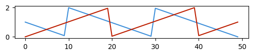
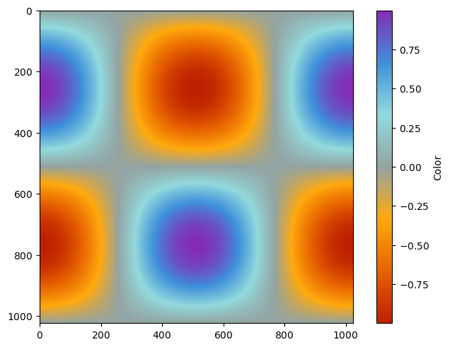

Colors#
This library uses the Accessible Color Sequences for Data Visualization by Matthew A. Petroff.
Show imports
%load_ext autoreload
%autoreload 2
import matplotlib.pyplot as plt
import numpy as np
import xplt
xplt.apply_style()
Color palette#
xplt.cmap_petroff
petroff

under
bad
over
Color gradients#
xplt.cmap_petroff_gradient
petroff_gradient
![petroff_gradient colormap]( "petroff_gradient")
under
bad
over
xplt.cmap_petroff_bipolar
petroff_bipolar
![petroff_bipolar colormap]( "petroff_bipolar")
under
bad
over
xplt.cmap_petroff_cyclic
petroff_cyclic
![petroff_cyclic colormap]( "petroff_cyclic")
under
bad
over
Usage#
With xplt.apply_style() in the import section above, the default color cycle is updated to use the petroff colors.
The colors are also accessible by name as p0, p1, … p9 even without applying Xplt’s style:
plt.figure(figsize=(5, 1))
plt.plot(np.linspace(5, 0) % 2)
plt.plot(np.linspace(0, 5) % 2, color="p2");

Colormaps can be used like cmap='petroff_bipolar':
fig, ax = plt.subplots()
t = np.linspace(0, 2 * np.pi, 1024)
data2d = np.sin(t)[:, np.newaxis] * np.cos(t)[np.newaxis, :]
im = ax.imshow(data2d, cmap="petroff_bipolar")
fig.colorbar(im, ax=ax, label="Color");

See also